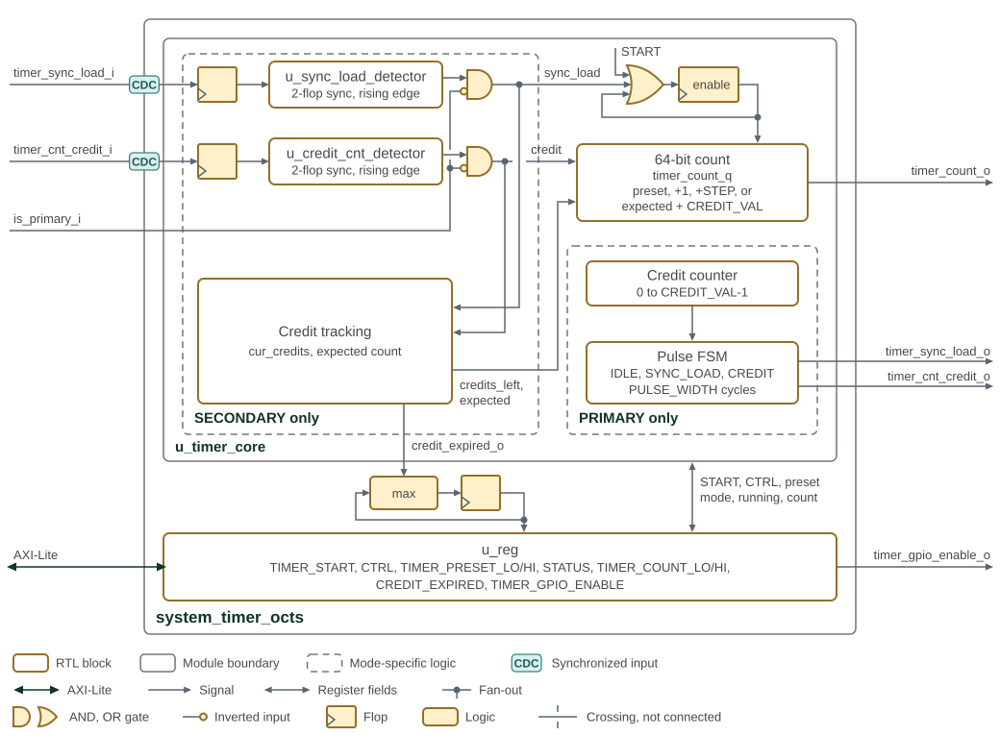

System Timer OCTS
Overview
The System Timer implements Open Chiplet Time Synchronization (OCTS). A primary timer counts local clock cycles and sends load and credit pulses to secondary timers. Each secondary advances between pulses, then corrects its count at the next credit boundary.
The counter is 64 bits. Its time unit depends on the primary clock; resolution and alignment accuracy also depend on the clock ratios, pulse routing and synchronization delay. The block does not guarantee nanosecond accuracy or simultaneous sampling across chiplets.
Software configures the timer through a 32-bit AXI4-Lite interface.
The is_primary_i input selects its role. The sections below cover counting,
synchronization constraints, setup and register access.
Operation
System Timer OCTS primary/secondary synchronization and credit CDC shows how primary and secondary timers exchange
synchronization information. The dashed groups hold the logic that acts in only one mode,
as is_primary_i selects it; the enable and the 64-bit count serve both. The inbound
sync-load and credit pulses cross into clk_i through a flop and a prim_edge_detector,
which synchronizes them with two flops and turns each rising edge into a one-cycle pulse;
an AND gate with is_primary_i on its inverted input masks each pulse in PRIMARY mode.
The enable flop is sticky: an OR gate holds it set once TIMER_START.START or a
sync-load pulse has set it. In SECONDARY mode, the sync-load pulse loads the preset, a
credit pulse moves the count to the expected count plus CREDIT_VAL, and between pulses
the count advances by CTRL.STEP, which drives the core’s timer_cnt_step_i, while
credits are left. The credit tracking block holds the cur_credits accumulator, which
adds STEP each cycle while it is below CREDIT_VAL (credits_left); the expected count,
which u_adder_expected_credit advances by CREDIT_VAL on each credit pulse; and the
credit_expired_o counter of cycles spent without credits. Both inbound pulses reset
cur_credits and credit_expired_o. In PRIMARY mode, the count advances by one, and the
credit counter and pulse state machine drive the outbound pulses. The wrapper keeps the
longest credit-starved run reported by the core in a flop that loads the larger of its
own value and credit_expired_o, and reads it back as CREDIT_EXPIRED; a write to
CREDIT_EXPIRED clears both. In the
SMC, the timer pulses use GPIO pads 55 and 56, which drive them on the primary chiplet and
sample them on a secondary one.

Counting and Synchronization
A write of 1 to TIMER_START.START starts the primary and loads
TIMER_PRESET_HI:LO. The primary then increments by one on each clk_i
cycle. It ignores synchronization inputs and generates load and credit
pulses for the secondaries.
A secondary loads its own preset when it detects a rising edge on
timer_sync_load_i. On each credit edge, it advances its expected count by
CTRL.CREDIT_VAL and replaces its actual count with that expected value.
Between edges, it increments by CTRL.STEP while credits remain. This
replacement is a correction, not just a diagnostic comparison: a secondary
count can move backward if its previous increments overshot the boundary.
| Role | Behavior |
|---|---|
Primary |
An 8-bit interval counter generates a credit event every
|
Secondary |
A 9-bit consumed-credit counter starts at zero on load or
credit edges. While it is less than |
Choose a nonzero secondary STEP appropriate to the clock ratio.
The limit is checked before adding the step, so the last increment can
cross it. A lost credit pulse also leaves the expected count behind the
primary; receiving a later credit does not recover the missing interval.
Pulse Generation and Clock Crossing
| State | Behavior |
|---|---|
|
Accept START, or a credit event while enabled. START has priority. |
|
Assert the primary load output for the configured width. |
|
Assert the primary credit output for the configured width. |
CTRL.PULSE_WIDTH sets the high duration in primary clock cycles; zero
is treated as one. CREDIT_VAL must exceed this effective width. The FSM
accepts triggers only while idle and does not queue them. In particular,
START can reload the primary count while an active pulse prevents a new
load pulse; use a coordinated reset and setup sequence for restarting.
Each synchronization input passes through an input flop, a two-flop synchronizer and an edge detector in the receiving clock domain. Pulses must stay high long enough to be sampled and low long enough to distinguish successive events. Determine those intervals from the destination clock, routing delay and CDC analysis; the RTL defines no universal frequency ratio, nanosecond timing guarantee or fixed system-wide alignment bound.
Status and Credit Expiration
STATUS.MODE is 0 for primary and 1 for secondary. STATUS.RUNNING is set
when the internal enable is set and the count is nonzero. It can therefore
remain set while a secondary is paused for lack of credit, or remain clear
immediately after loading a zero preset. It is not a synchronization check.
The secondary core counts cycles spent without credit. Load and credit
edges clear this interval counter. The register wrapper retains the largest
observed value in CREDIT_EXPIRED; writing any value clears the saved
maximum, while only a load or credit pulse clears the running interval
counter in the core. Normal credit reception does not clear the saved
maximum. In a primary configured from reset, it stays zero.
Use this value to detect waiting for credit, with thresholds derived from the clock ratio and pulse interval. It does not directly measure timestamp error or prove that all credit pulses arrived.
Reset
rst_ni asynchronously clears the counter, enable, pulse state and
registers. Reset release must meet the integration’s timing requirements;
this block does not synchronize reset deassertion internally.
Enable is sticky after START or a received load edge. There is no stop CSR; writing START=0 does not stop counting. Configure role and timing before starting, and use system reset when a coordinated reconfiguration is needed.
Interface
The System Timer OCTS IP provides interfaces supporting both PRIMARY and SECONDARY timer modes, with flexible support for either AXI4-Lite or APB4 bus protocols. All interface signals operate synchronously to the system clock.
Configuration Parameters
The parameters and ports of system_timer_octs are listed in system_timer_octs.
The timer configuration is described in terms of a register interface
protocol, BUS_PROTOCOL (AXI4-Lite or APB4, default AXI4-Lite), an address
bus width, ADDR_WIDTH (default 32, 8 bits effective), and a data bus
width, DATA_WIDTH (default 32).
Timer mode selection (PRIMARY vs SECONDARY) is controlled at runtime
via the is_primary_i input signal, not through a compile-time parameter.
|
Test Interface
The test controls are test_en_i, an active-high test enable for
manufacturing test mode and debug access, and scan_rst_ni, an active-low
scan reset that gives the scan chain independent reset control for
manufacturing test and ATPG.
OCTS Synchronization Interface
When operating in PRIMARY mode, the timer generates synchronization
pulses: timer_sync_load_o is asserted when the START register is
written, and timer_cnt_credit_o is asserted periodically according to
internal credit generation logic. Any synchronization input signals are
ignored in PRIMARY mode. In contrast, SECONDARY mode relies on input
from the PRIMARY: timer_sync_load_i directs the timer to initialize
using a preset value, and timer_cnt_credit_i delivers credit pulses
that allow continuous synchronization. In this mode, the outputs remain
inactive.
Timer Counter Interface
The step input, timer_cnt_step_i, is an 8-bit value used in SECONDARY
mode.
For SECONDARY timers, the step input (timer_cnt_step_i) enables
granular control over the increment rate. Typically set to 1 for a
standard per-cycle increment, this parameter can be tuned to adjust for
differing clock ratios or calibration needs, but is only effective when
credits are available (i.e., when the credit counter permits counting).
The timer’s count output (timer_count_o) provides direct and
continuous access to the current counter value, updating every clock
cycle while the timer is running. This value is useful for timestamping,
monitoring, or debugging, and can also be read from the COUNT_LO and
COUNT_HI registers.
Timing
The RTL defines no setup, hold or clock-to-output limit, maximum clock frequency or frequency ratio between OCTS clock domains. Clock frequency, jitter, reset timing and physical timing constraints must come from the integration timing specification.
Synchronization inputs cross into clk_i as described in Pulse Generation and Clock Crossing;
derive the required pulse high and low intervals from the destination clock
and CDC analysis. Reset behavior is described in Reset.
Memory Map and Register Reference
Memory Map
The register bank occupies 0x00–0x23 and uses 32-bit AXI4-Lite accesses.
Use the enclosing subsystem’s memory map for its base address.
| Register | Offset | Reset | Meaning |
|---|---|---|---|
|
|
0 |
START is a single-cycle command. |
|
|
|
STEP=1, PULSE_WIDTH=2, CREDIT_VAL=10. |
|
|
0 |
MODE subsequently reflects the role input; RUNNING reflects enable and nonzero count. |
|
|
0 |
Two independently writable preset halves. |
|
|
0 |
Live count halves, with no snapshot latch; the timestamp read sequence is in the Programmer’s Guide. |
|
|
0 |
Saved maximum wait for credit; any write clears it. |
|
|
0 |
Timer GPIO LSIO selection starts disabled. |
Detailed Register Map
OCTS System Timer Address Map
Open Chiplet Time Synchronization (OCTS) System Timer Registers
Register List:
| Address | Name | Access | Description |
|---|---|---|---|
| 0x0 | TIMER_START | RW | System Timer Start Register |
| 0x4 | CTRL | RW | System Timer Control Register |
| 0x8 | STATUS | R | System Timer Status Register |
| 0xC | TIMER_PRESET_LO | RW | System Timer Preset Value [31:0] |
| 0x10 | TIMER_PRESET_HI | RW | System Timer Preset Value [63:32] |
| 0x14 | TIMER_COUNT_LO | R | Current System Timer Count [31:0] |
| 0x18 | TIMER_COUNT_HI | R | Current System Timer Count [63:32] |
| 0x1C | CREDIT_EXPIRED | RW | Credit Expired Register |
| 0x20 | TIMER_GPIO_ENABLE | RW | System Timer GPIO Enable Register |
Register Details:
TIMER_START
| Bits | Field | Access | Reset | Description |
|---|---|---|---|---|
| 31:1 | Reserved | - | - | Reserved |
| 0 | START | RW 1P | 0x0 | Start the system timer. Asserts the sync_load signal to start synchronization (only does anything if primary mode). Ensure both primary and secondary are out of reset. |
CTRL
| Bits | Field | Access | Reset | Description |
|---|---|---|---|---|
| 31:24 | Reserved | - | - | Reserved |
| 23:16 | STEP | RW | 0x1 | Step amount for secondary timer |
| 15:8 | PULSE_WIDTH | RW | 0x2 | Pulse width for sync load and credit signals. A value of 0 will be rounded up to 1. WARNING: This value must be less than CREDIT_VAL |
| 7:0 | CREDIT_VAL | RW | 0xA | Credit value factor. WARNING: This value must be greater than PULSE_WIDTH |
STATUS
| Bits | Field | Access | Reset | Description |
|---|---|---|---|---|
| 31:5 | Reserved | - | - | Reserved |
| 4 | RUNNING | R | 0x0 | Timer is currently enabled and running |
| 3:1 | Reserved | - | - | Reserved |
| 0 | MODE | R | 0x0 | Timer mode driven by the is_primary_i input: 0=PRIMARY (is_primary_i=1), 1=SECONDARY (is_primary_i=0). |
TIMER_PRESET_LO
| Bits | Field | Access | Reset | Description |
|---|---|---|---|---|
| 31:0 | PRESET_LO | RW | 0x0 | Lower 32 bits of preset value |
TIMER_PRESET_HI
| Bits | Field | Access | Reset | Description |
|---|---|---|---|---|
| 31:0 | PRESET_HI | RW | 0x0 | Upper 32 bits of preset value |
TIMER_COUNT_LO
| Bits | Field | Access | Reset | Description |
|---|---|---|---|---|
| 31:0 | COUNT_LO | R | 0x0 | Lower 32 bits of current timer count |
TIMER_COUNT_HI
| Bits | Field | Access | Reset | Description |
|---|---|---|---|---|
| 31:0 | COUNT_HI | R | 0x0 | Upper 32 bits of current timer count |
CREDIT_EXPIRED
| Bits | Field | Access | Reset | Description |
|---|---|---|---|---|
| 31:0 | MAX_CYCLES_EXPIRED | RW | 0x0 | Maximum number of clock cycles since a count credit expired (SECONDARY only). To reset the value of this register, write anything to it. If this number is very high (exact value depends on clock speed and credit value), this indicates that the secondary has not received a count credit pulse in a while, and is likely not syncing properly with the primary. This register can also be used to determine the clock skew between the primary and secondary. If PRIMARY, this field is always 0. |
TIMER_GPIO_ENABLE
| Bits | Field | Access | Reset | Description |
|---|---|---|---|---|
| 31:1 | Reserved | - | - | Reserved |
| 0 | GPIO_ENABLE | RW | 0x0 | Enable the GPIO pad lsio interface for the system timer. This is done to prevent X-prop on reset into the secondary timer, which can cause the secondary timer to start counting early. |